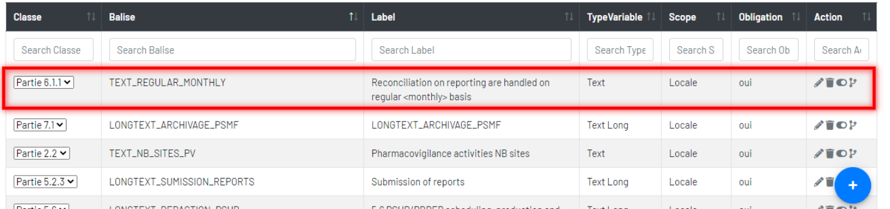
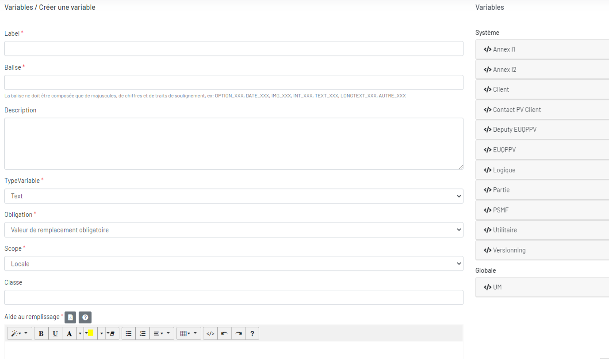
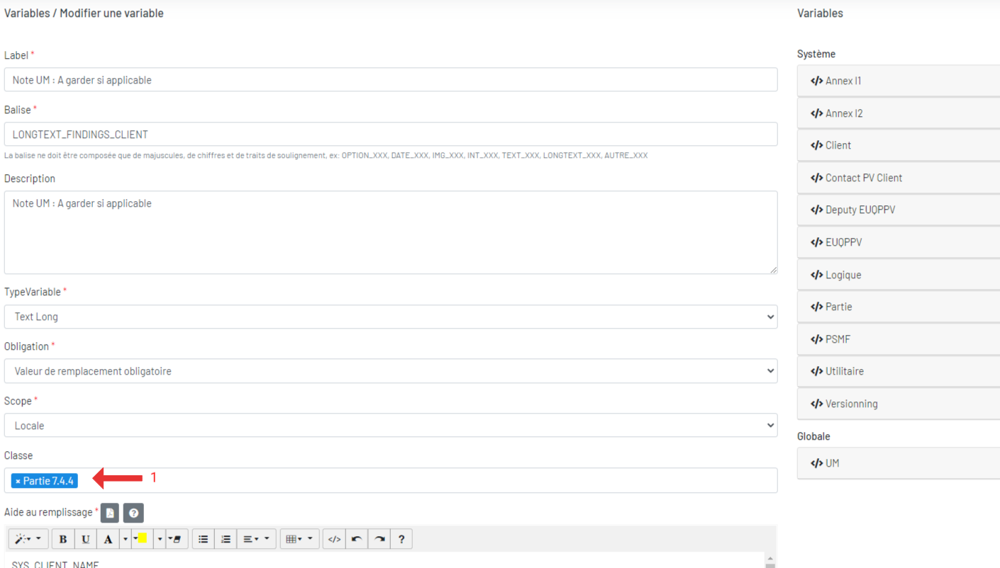

Variables
Elément inséré dans un Template, et remplacé automatiquement par sa valeur correspondante à la génération du document.
1. Liste des variables

 Ajoutez une variable.
Ajoutez une variable.  Modifiez une variable.
Modifiez une variable.  Supprimez une variable.
Supprimez une variable.  Désactivez/activez une variable.
Désactivez/activez une variable.  Historique des modification d'une variable.
Historique des modification d'une variable.
2. Ajouter une variable

- Un label – Obligatoire,
- Une balise – Obligatoire,
- Une description – Facultatif,
- Un type – Obligatoire
- Texte Long
- Texte
- Image
- Une obligation – Obligatoire
- Obligatoire
- Facultative
- Un scope – Obligatoire (
- Local
- Global
- Une classe – Facultatif,
- Une aide au remplissage – Obligatoire
Tout les modifications de la variable système nécessiten une modification de l'application.
Pour la scope de variable locale, il est important d'associer à une classe ou plusieurs classes, car la classe peut lier à une section ou à une annexe. Donc cette variable locale peut s'afficher dans le menu de droit de l'édition de la section ou de l'annexe.
3. Modifier une variable

1Pour la scope de variable locale, il est important d'associer à une classe ou plusieurs classes, car la classe peut lier à une section ou à une annexe. Donc cette variable locale peut s'afficher dans le menu de droit de l'édition de la section ou de l'annexe. Plus